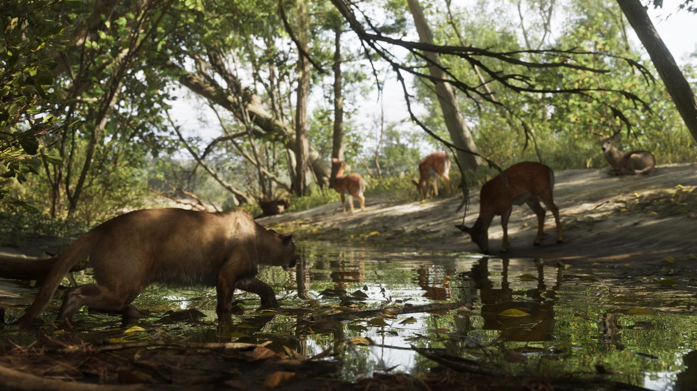
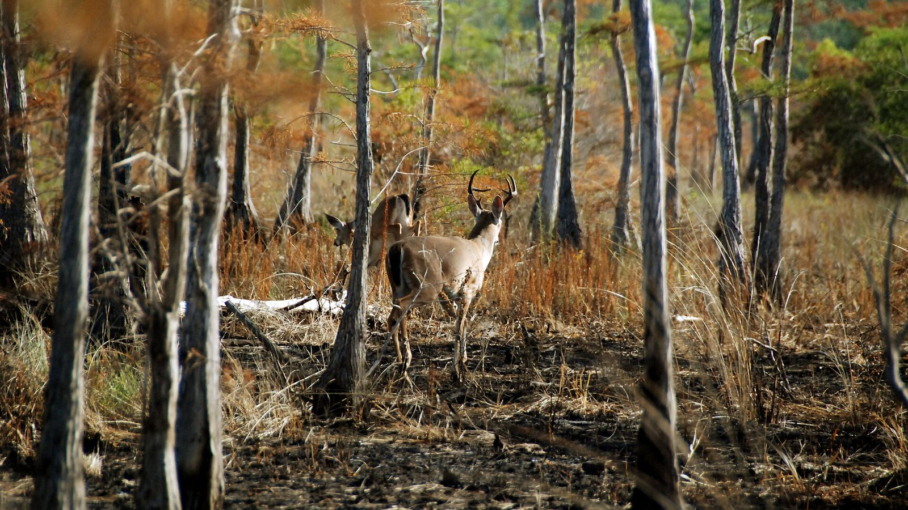

Олени Леониды и белохвостый олень
Опубликовано:
Олени на водопое в лесу — обычная картина Флориды. Вид Rockstar не называла, но главный дикий олень штата — белохвостый.


- На кадре Mount Kalaga — несколько оленей пьют из лесной протоки.
- Главный дикий олень Флориды — белохвостый (Odocoileus virginianus).
- На Флорида-Кис живёт его карликовый подвид — олень Кис, около 70–80 см в холке.
- Олень Кис под охраной, почти вся популяция — на острове Биг-Пайн-Ки.
Что в игре
На официальном кадре Mount Kalaga несколько оленей стоят у лесной протоки и пьют. Охота в регионе заявлена официально.
Что в реальности
Белохвостый олень живёт по всей Флориде — от лесов севера до болот Эверглейдс. Флоридские олени заметно мельче северных сородичей.
Самый маленький олень Северной Америки живёт на Флорида-Кис — олень Кис (Key deer), подвид белохвостого. Ростом он с крупную собаку, около 70–80 см в холке. Почти все они живут на острове Биг-Пайн-Ки, где для них создан национальный заповедник. Будут ли такие олени в Leonida Keys, узнаем 19 ноября.
Совпадает и отличается
| Флорида | Леонида | |
|---|---|---|
| Олени в лесу | Белохвостый олень | 🟢 На кадре |
| Вид | Odocoileus virginianus | Не назван |
| Карликовые олени на островах | Олень Кис | Узнаем в игре |
| Охота | Сезоны и правила FWC | 🟢 Заявлена |
Источники: Rockstar Games (кадры Mount Kalaga); Florida Fish and Wildlife Conservation Commission (белохвостый олень); U.S. Fish and Wildlife Service — National Key Deer Refuge.
Реальные фото: Фото: USFWS/Southeast, Public domain · Wikimedia Commons. Кадры игры: Rockstar Games.
Разборы кадров, слухи и факты за 30 секунд. Подписывайтесь:
YouTubeInstagramTikTok

 vs
vs